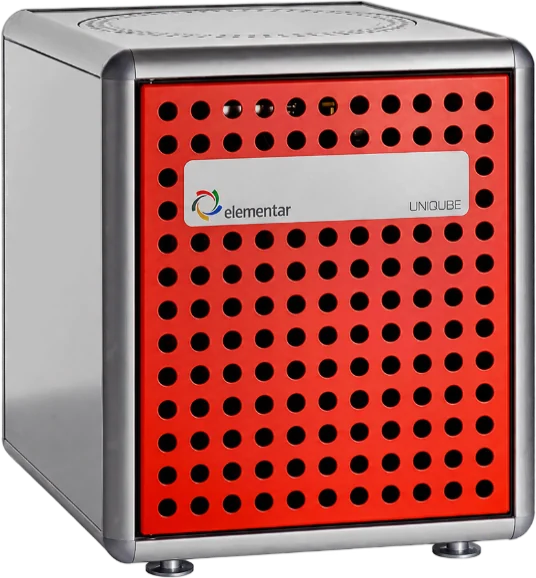

Organic microanalysis
UNICUBE
UNICUBE – an elemental analyser that combines the low operating costs and high sensitivity of a micro elemental analyser with the dynamic measuring range of a macro analyser. UNICUBE is designed for simultaneous C, H, N and S analysis in solid and liquid samples, ranging from 0.1 mg of a chemical substance to 15 mg of liquid fuel to 1 g of inhomogeneous soil. In addition, the analyser offers options for oxygen and chlorine determination. The integrated autosampler, which can be refilled during analysis, is available with 60, 80, 120 or 240 positions for solid and liquid samples in capsules, or with 50 positions for liquid samples.